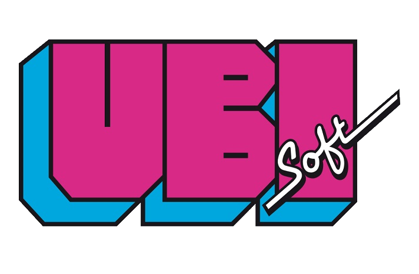

I) Le jeu vidéo comme renouvellement total : le cas Ubisoft
A) Ubisoft, une entreprise agricole avec des perfectives toutes autres
Ubisoft (anciennement Ubi Soft entertainement) est une entreprise familiale française fondée en 1986 et spécialisé dans le développement, l’édition et la distribution de jeux vidéo.
L’entreprise fut fondée par les 5 frères Guillemot (Claude, Michel, Yves, Gérard et Christian) originaires de Carentoir en Bretagne. Au départ, celle-ci été spécialisé dans les produits agricoles. L’idée de se tourner vers le jeu vidéo vient de l’un des frères, Michel, qui lors d’un voyage en Angleterre se rendit compte que les jeux vidéo y étaient moins cher qu’en France. Il fit alors rapidement le lien avec le potentiel du marché.
Guillemot international voit le jour et se spécialise dans la distribution de jeux vidéo principalement sur Amstrad et Atari.
Puis en 1986, les 5 frères fondent Ubisoft à Carentoir en Bretagne et sortent leur premier jeu la même année. Ce jeu, Zombi, est vendu principalement en France, Royaume Unis, en Allemagne et aux Etats-Unis.Le nom de l’entreprise « Ubisoft » vient de la racine de ubiquité qui signifie être présent à plusieurs endroit en simultanément, et le mot « soft » fait référence au mot anglais « software » signifiant logiciels. Il y eu une polémique, vite étouffée, sur le préfixe Ubi qui ferait référence à l’Union des Bretons indépendants, ce qui est totalement faux.
B) Une entreprise avec le vent en poupe
L’entreprise connait une croissance rapide et va enchainer les titres (ex : Iron Lord (1989) vendu à plus de 100 000 exemplaires). Le premier studio ouvre à Paris en 1992 suivi la même année du premier studio étranger à Bucarest en Roumanie. En 1995, Ubisoft investira plusieurs millions de francs dans leur première grande franchise dans le Jeux Vidéo : Rayman. Ce jeu, par son succès mondial, deviendra rapidement la mascotte de la firme.
Au fils des années, Ubisoft ouvrira des studios dans de nombreux pays (Canada, Maroc, Italie…), lancera d’autres licences à succès comme Tom’ Clancy’s Splinter Cell (2002), Prince of Persia (2002), les Lapins Crétins (2006) ou encore Assassin’s Creed (2007) avec laquelle Ubisoft s’aventurera dans le domaine de cinéma avec leur premières production cinématographique sortie en 2016, portant le nom de la licence phare : Assassin’s Creed.
Ainsi, Ubisoft, une entreprise spécialisée à l’origine dans les produits agricoles, a su prendre la tendance, innover et se tourner vers l’informatique et le jeu vidéo pour devenir l’une des plus grandes firmes du secteur à l’heure actuelle. Le jeu vidéo comme levier d’impulsion : le cas Nintendo.

Cliquez ici pour aller à la partie suivante
Developpé par Limou & Pauwels, contactez-nous ! Copyright: 2017-2018